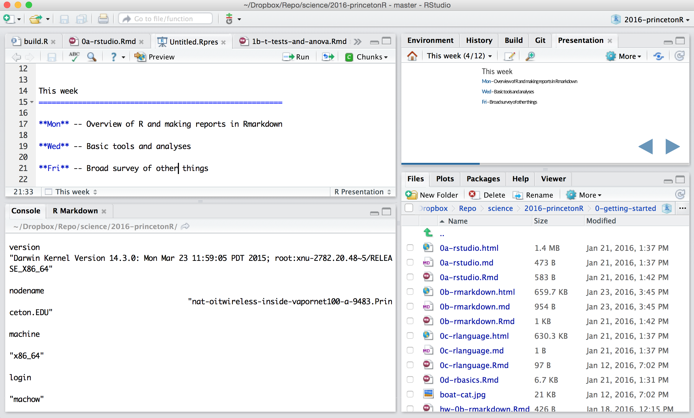
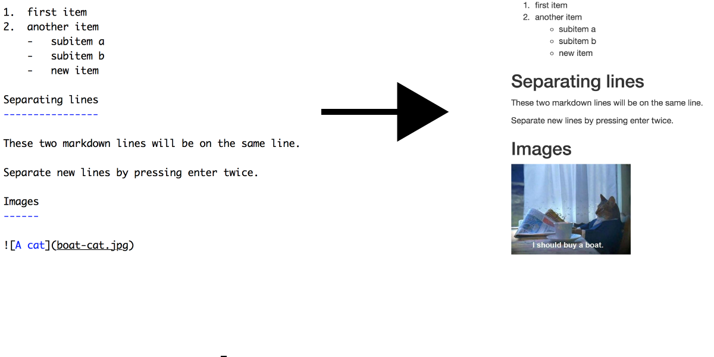
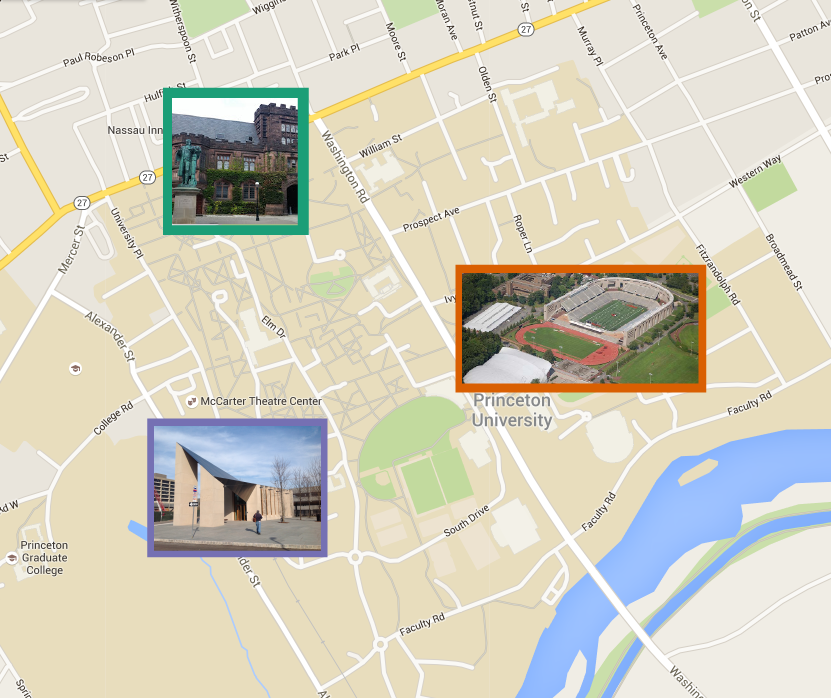
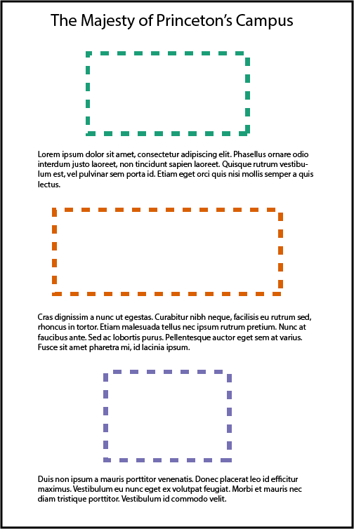
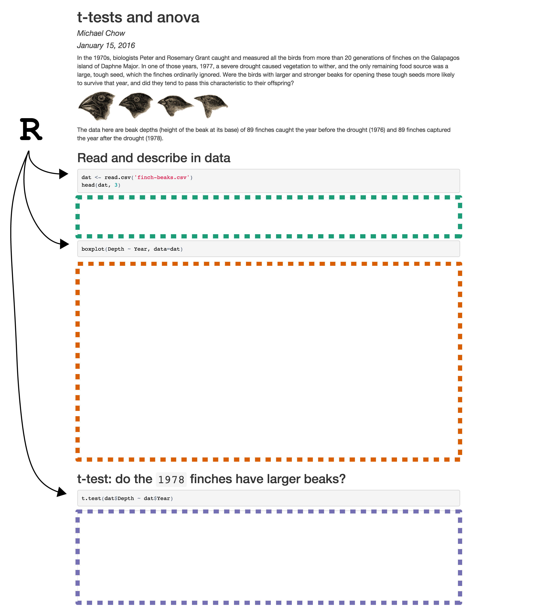
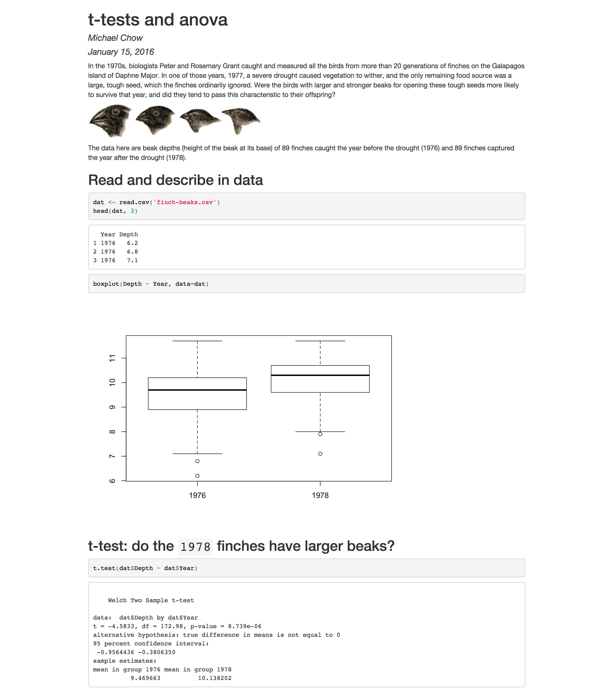

Data Analysis and Reporting with R
author: Michael Chow and Nick Rohrbaugh
slides here
About us
R can do a lot of things
This week
Mon -- Overview of R and making reports in Rmarkdown
Wed -- Basic tools and analyses
Fri -- Broad survey of other things
Setup

Create a folder for R Projects
Overview of R and making reports in Rmarkdown
- what is R?
- what is Rmarkdown?
- using Rstudio for great justice.
R in a nutshell
> 1 + 1
[1] 2
> plot(sin(1:100*pi/50), type='l', col='blue')

Markdown in a nutshell

Why combine the two?


R + markdown == Rmarkdown
-
Making reports with R is easy!
-
Combine R and markdown

R + markdown == Rmarkdown (cont.)
-
Show R output in meaningful way
-
No copy / paste madness
-
Connect code with end goal

Getting familiar with Rstudio
Basic Layout
- Console
- Files
- Scripts
- (Environment)
Concepts
- Working Directory
- Workspace
- Knitting
Resources
Interactive: http://tryr.codeschool.com/
More interactive: http://datacamp.com
Many links: https://www.rstudio.com/resources/training/online-learning/